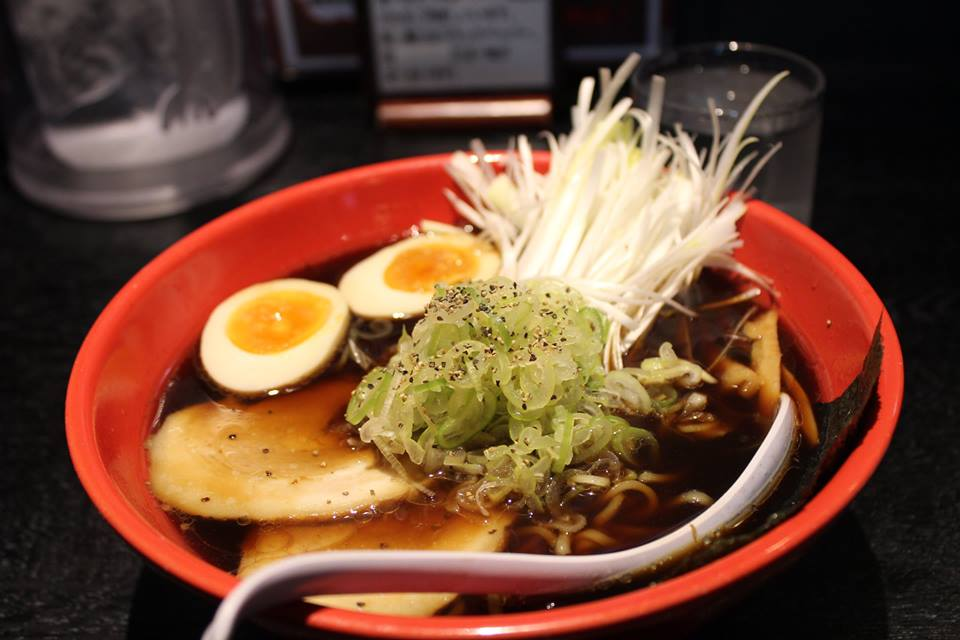

About Me

I'm just a normal guy that happens to be a molecular technologist in the clinical field, is addicted to anime and gaming of mostly niche genres, and bakes bread and pastries for a hobby.
My favorite foods are noodle soups such as ramen and pho, baked goods, and oranges. A good broth and noodles warms the body and soul. A good loaf of bread doesn't need a warm drink to be dunked in, but is instead complemented by it. Oranges are the equivalent to apples in terms of health, just juicier.
I want to go back to Japan...
Connect with Me